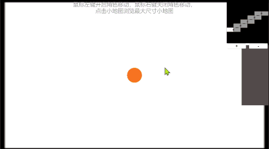
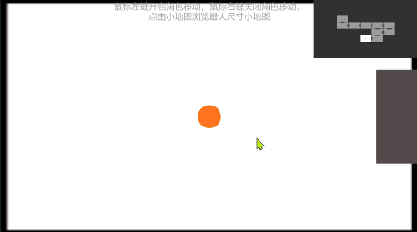

Unity实践之游戏小地图
前言
游戏小地图在游戏项目中是常见的需求之一，今天我们就来探索这个需求的解决方案，博文可能会不定期更新，因为可能涉及新的解决方案，后续直接在此文中补充。
解决方案
Camera + Render Texture
这个方案的思路就是单独创建一个专用于小地图渲染的相机，结合 Unity 的 Render Texture，将相机的渲染画面定向到对应 Render Texture 资产，然后通过能够配置 Render Texture 资产的 UI 组件实现在界面上显示。
在 Project 视图中放置项目资源的位置创建一个 Render Texture 资产，并作好命名。
创建一个相机，命名为 MinimapCamera，设置相关属性，例如
Clear Flags可以设置为Solid Color，Culling Mask就选择你需要在小地图中显示的Layer，Projection设置为Orthographic，Target Texture设置为你项目资源中刚创建的用于小地图的 Render Texture 资产，其它属性根据具体项目需求自行设置，也可以在代码中去根据具体场景调整，但上述属性通常情况下不需要去修改。创建小地图 UI，例如 UGUI 的
RawImage，将其 Texture 属性设置为我们小地图的 Render Texture 资产即可。

演示
具体可参考 Demo 资源中的 Demo 场景
Camera
这个方案的思路就是单独创建一个专用于小地图渲染的相机，结合相机组件本身自带的 Viewport Rect 属性。
- 创建一个相机，命名为 MinimapCamera，设置相关属性，例如
Clear Flags可以设置为Solid Color，Culling Mask就选择你需要在小地图中显示的Layer，Projection设置为Orthographic，其它属性根据具体项目需求自行设置，也可以在代码中去根据具体场景调整，但上述属性通常情况下不需要去修改。

演示
具体可参考 Demo 资源中的 Demo2 场景
资源下载
系列文章
本博客所有文章除特别声明外，均采用 CC BY-NC-SA 4.0 许可协议。转载请注明来源 我与岁月的森林的博客！
评论